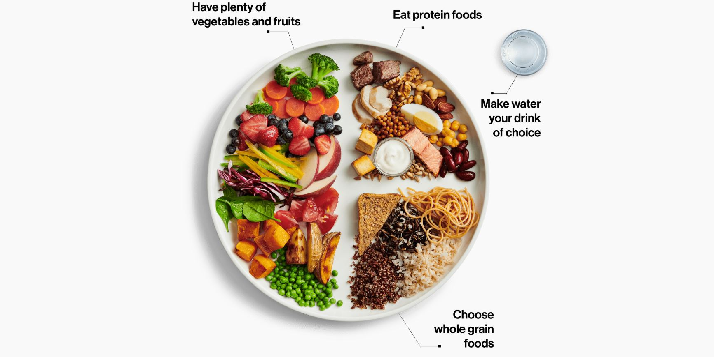

What Does Eating Healthy Mean?
Eating healthy doesn't mean reducing the amount of food we intake, it just mean that eating more varieties of food every day. Eating the right amount various types of foods will for sure gurantee our health related with nutrition, but it doesn't mean that having Burgur King for breakfast and Dominos for dinner the food must come from organic sources. Additionally, we need to vegitables, fruits, fat-free products, and foods with protien, and we need to avoid foods with high amounts of added sugar and salt.For more information about healthy foods please visit My Health Finder web site.

Major Benefits of Healthy Foods
Listing all the benefits of eating healthy food is nearly impossible, and the list below is by no means complete. Eating vegetables and fruits benefits not only people with wieght problem but also for people who are in good shape and health by regulating their blood flow. Maintaining healthy food diet is almost always the first remedy for most health issues, and the following list mentions some of the benefits:
- Weight loss
- Diabetes management
- Strong Bones
- Reduce cancer risk
- Lower calorie intake
For more elaborated benefits visit Medical News Today's site.
Organic Foods
The term "organic" here refers to how the farm is controlled. In the U.S. organic farms must not use any synthetic herbsides, pesticides, or GMO's (bioengineered genes) for faster growth. These and many specifications are set by USDA; You can learn more about USDA organic labeling what it mean at USDA's web site. Since organic farms use no artificial chemicals, they are good for both human health and the environment. The main difference between organic and non-organic foods products are as follows:
| Organic vs. non-Organic |
|---|
| Organic |
Non-Organic |
| Uses natural fertilizers |
Synthetic or chemical fertilizer |
| Organic feed and GMO free |
Growth stimulated by growth hormone |
| Livestocks are controlled naturally by health diet and crop rotation |
Controlled by Antibiotics |
| Pests and weed are controlled by birds, insects, crop rotation |
Pests and weeds are controlled by synthetic pestsides and chemical herbside |
To learn more about why organic products are neccary vist Mayo Clinics web site